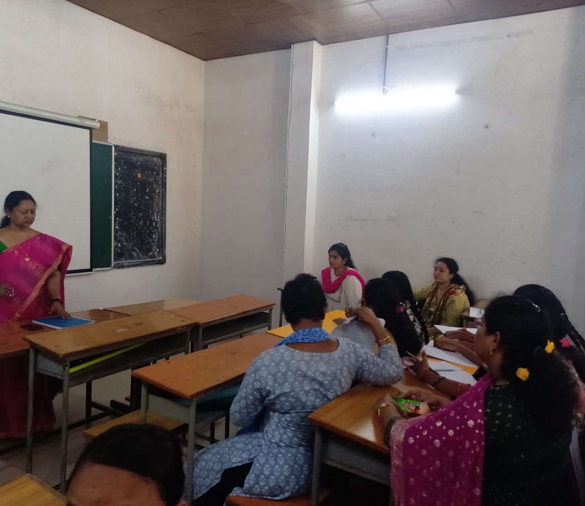
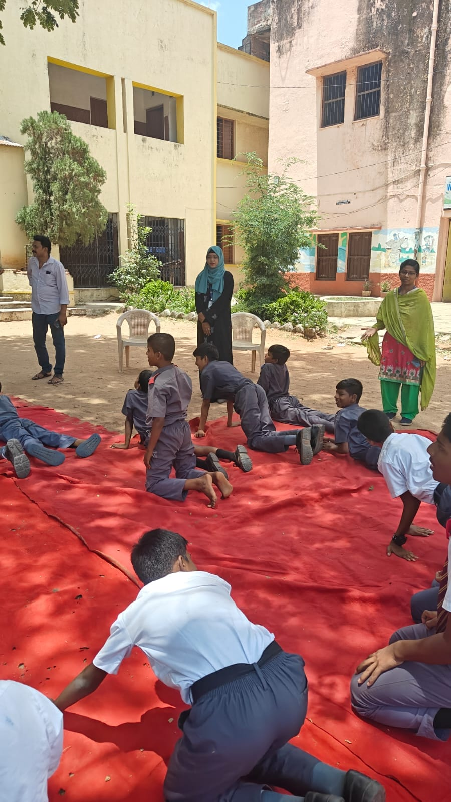
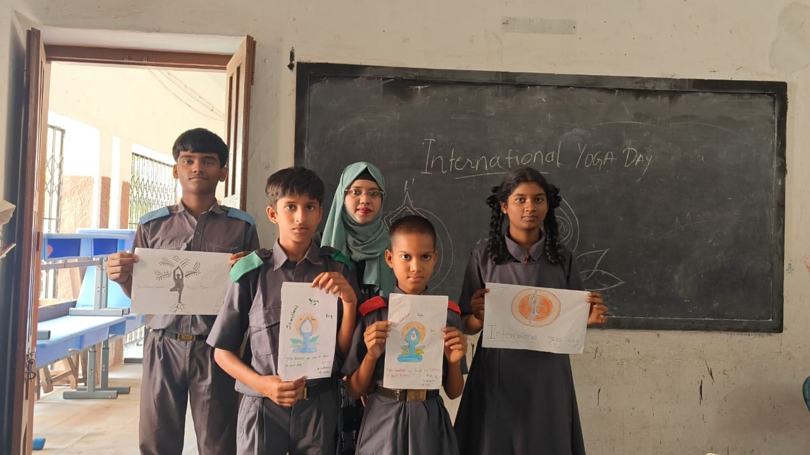
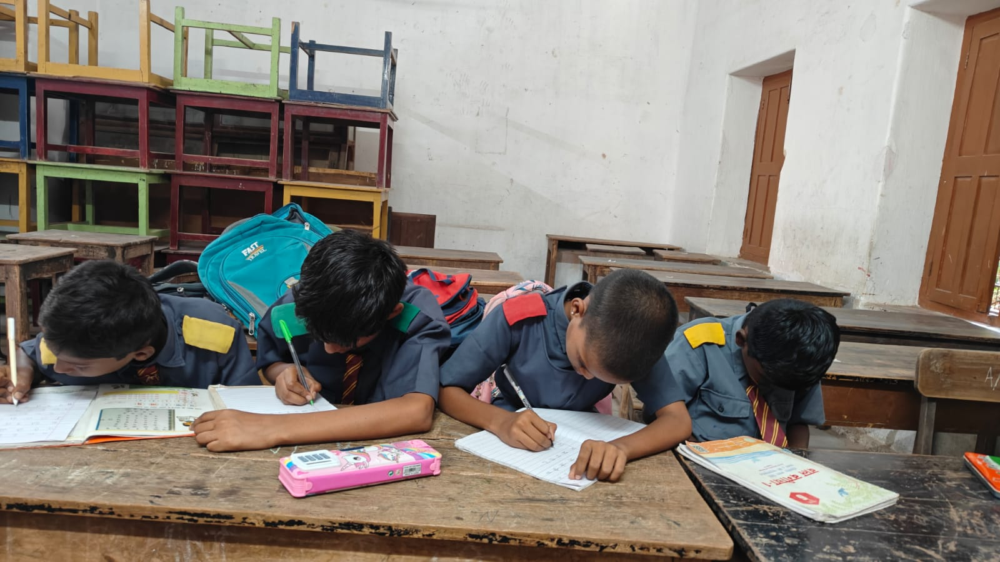
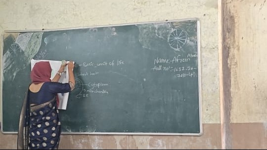
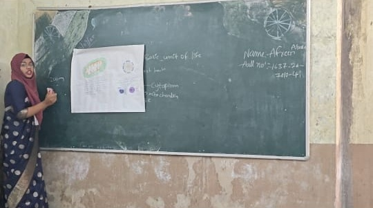
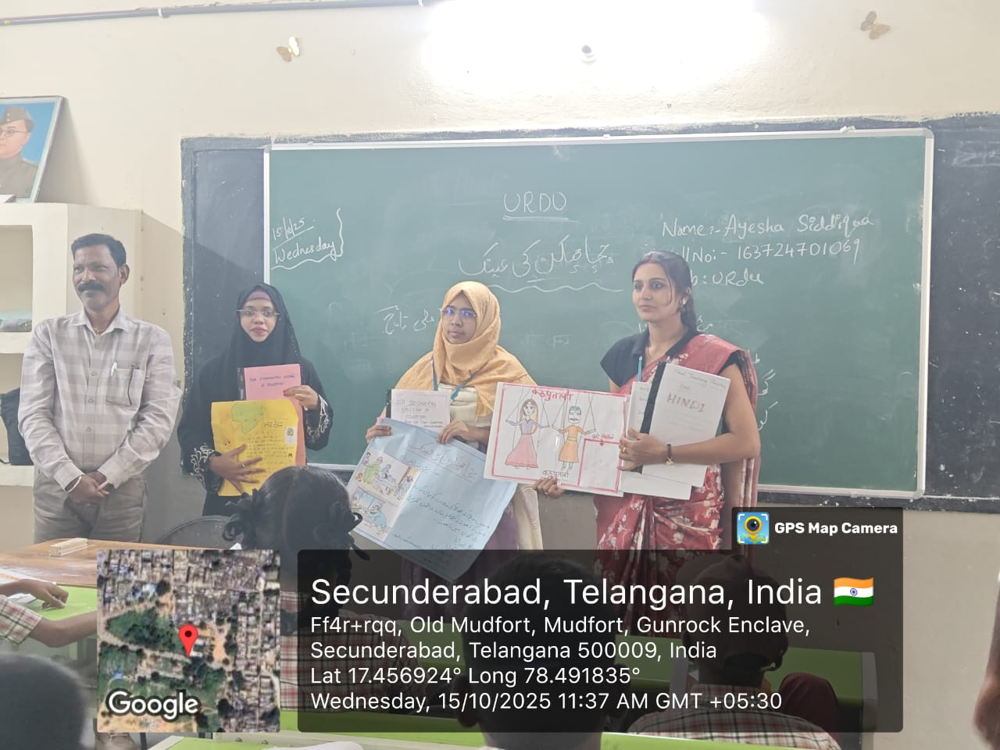

Stepping into the School.
This semester was all about transitioning from a student to a teacher. It was the first time I really got to step into a school, interact with the kids, and manage real classroom activities during Internship Phase 1.


Pre-Internship Orientation
Before we were sent out to the schools, we had an intensive orientation phase. Our professors made sure we knew exactly what was expected of us—not just in terms of delivering a lesson, but in how we conduct ourselves professionally.
We discussed everything from maintaining discipline without raising our voices, to organizing school-wide events. It set the stage for everything that happened next.
Yoga Day at Wesley High School
During my Internship Phase 1 at Wesley Co-Ed High School, I quickly learned that being a teacher means participating in the broader life of the school. I had the wonderful opportunity to help organize and facilitate the International Yoga Day celebrations.
It was incredibly rewarding to guide the students through their asanas outside on the ground. Later, back in the classroom, they excitedly showed me the Yoga Day posters they had drawn. Experiences like this help build a bond with the students that goes way beyond the textbooks.




Classroom Management
One of the most satisfying parts of the internship was learning how to properly manage a classroom full of energetic kids. It takes a lot of effort to establish a routine where students feel settled and ready to work.
Walking around the room and seeing the students sitting quietly, completely absorbed in their writing tasks and activities, felt like a huge win. It proved that when you set the right environment, students are more than willing to engage deeply with their learning.
Biology Classroom Practice
When it was time to actually teach Biology, I quickly realized that pacing is everything. While teaching the "Basic Unit of Life", I saw that drawing complex cell diagrams from scratch took too long and lost the students' focus.
I adapted my strategy: I started with a basic, fast chalkboard sketch to introduce the concept, and then seamlessly transitioned to pinning up a pre-made, detailed chart. This kept the lesson flowing smoothly and kept the students visually engaged.




Interactive Hindi Lessons


Bringing Stories to Life
Teaching literature requires energy, otherwise, the students just tune out. My group and I decided to make our Hindi lessons as visual and interactive as possible.
One of our best sessions was teaching the "कठपुतली" (Kathputli/Puppets) lesson. Instead of just reading from the textbook, we stood up as a team and used large hand-drawn illustrations to explain the story. The students loved the visual element, and it made it so much easier for them to grasp the moral of the poem.
From Theory to Action
Semester II completely changed my perspective. Organizing events like Yoga Day and standing at the front of a real classroom gave me the confidence I needed to move forward. The next step was taking all these handmade tools and putting them into practice.